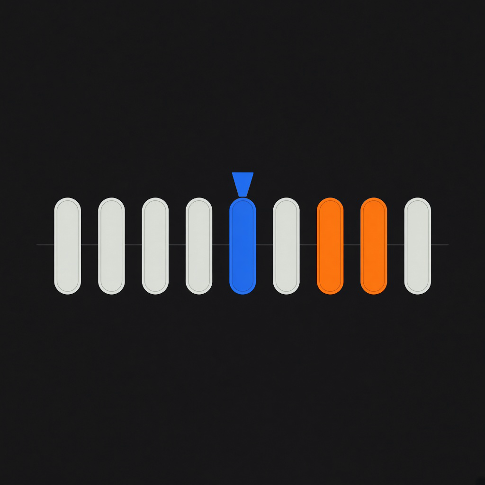
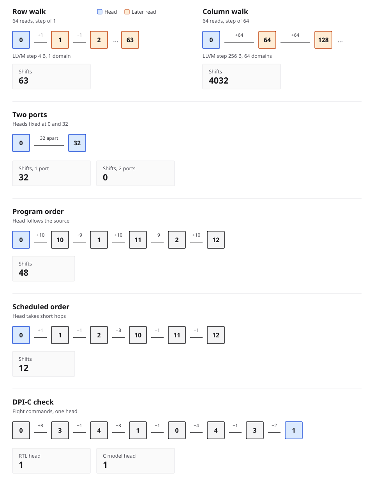

LLVM cost pass
llvm/CostPass.cpp uses ScalarEvolution. row_sum reports a steady shift of 1 and carry 63. col_sum reports 64 and 4032. gather_sum is marked indirect, because vals[idx[i]] has no affine stride.

PortwalkRacetrack memory does not offer random access. A domain becomes visible only after the nanowire shifts it under an access port. Portwalk turns that distance into a cost an LLVM pass can report, schedules gathers to shorten the walk, and checks the shift controller against the same model through DPI-C.
Blue is the domain under the port. Amber is a later read. A unit stride in LLVM is a 4-byte step, one domain. A column stride is 256 bytes, 64 domains. Carry shifts are the steady shift times the trip count minus one, because the first element is free when the head is already there.

make demo: row 63, column 4032, one port versus two, program order 48, scheduled 12, and the DPI-C head match.llvm/CostPass.cpp uses ScalarEvolution. row_sum reports a steady shift of 1 and carry 63. col_sum reports 64 and 4032. gather_sum is marked indirect, because vals[idx[i]] has no affine stride.
src/schedule.c reorders independent reads to shorten head travel, the way a NIC may reorder DMA descriptors inside one burst. A write of a domain stays ahead of a later read of that domain.
src/rll.c bit-stuffs stored words so a run of zeros stays bounded. A raw all-zero word is a write fault. The encoded word is not. This stands in for a long stretch of nanowire with no skyrmion.
rtl/rtm_ctrl.sv is a one-command shift controller. src/dpi_bridge.c replays every command on the C model. The run passes only when head and read data match. The trace is build/cosim_trace.csv.
A prototype cost model and a single-port controller. Timing is one cycle per domain of travel and one cycle per access. A domain is a 32-bit word. The C model is what evaluates extra ports. Shift-pulse energy, skyrmion diameter, and misalignment probability are not modeled.
Affine layout rewriting for racetrack memory is already published as polyhedral compilation on Polly. Portwalk sits beside that result. It schedules the accesses outside the affine fragment, and it keeps the compiler and the controller on one cost model.
A narrated pass over the same tape, from a single step to the LLVM report. Generated English voice. About three minutes.
LLVM/Clang 21 and Verilator, the versions this tree was developed against.
git clone https://github.com/khademullah/LLVM-DPI-C.git
cd LLVM-DPI-C
make check # model, scheduler, RLL
make demo # numbers, LLVM report, DPI-C co-simThe pass also loads into opt:
opt-21 -load-pass-plugin=build/rtm_cost.so -passes=rtm-cost \
-disable-output build/ir_kernels.ll